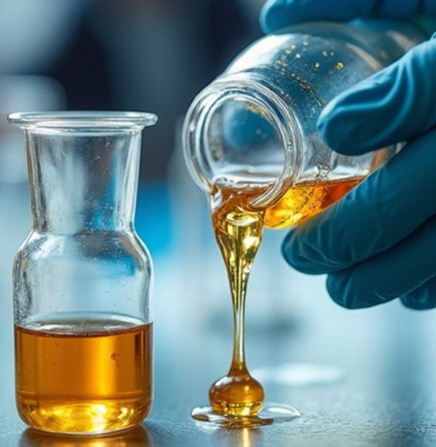

Materials • Working Stamps • Resists • Process Development • Equipment Optimization
ContactNanoImprint Consulting is an independent Nanoimprint Lithography (NIL) consulting company specialized in NIL materials, working stamps, resists, process development and equipment optimization for advanced semiconductor and nanofabrication applications. With more than 25 years of experience in the semiconductor industry and 15 years dedicated to Nanoimprint Lithography, NanoImprint Consulting provides expertise in NIL process development, product development and technology optimization. Supporting companies and research organizations, NanoImprint Consulting delivers practical solutions covering materials, working stamps, resists, surface engineering and NIL equipment optimization.

Selection, evaluation and optimization of advanced materials for Nanoimprint Lithography applications.
Development and optimization of imprint stamps for high-resolution pattern transfer.
Optimization of resist systems to achieve reliable and high-quality nano-patterning.
Complete NIL process development from laboratory concept to optimized production process.
Engineering of surfaces and interfaces to improve adhesion, release and process stability.
Support for NIL equipment selection, optimization and performance improvement.
✔ Specialized Nanoimprint Lithography expertise
✔ Strong understanding of materials and processes
✔ Hands-on experience with NIL technologies
✔ Solutions from R&D development to industrial challenges
NanoImprint Consulting
Nanoimprint Lithography & Process Engineering
contact@NanoImprintconsulting.com